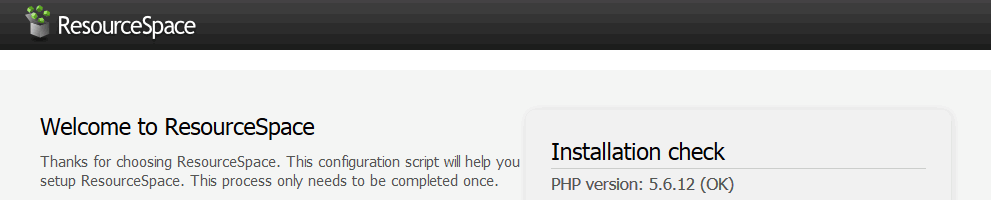
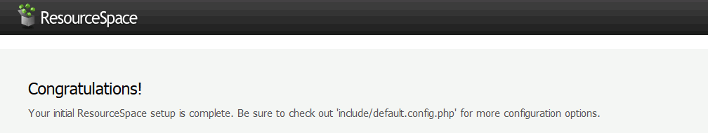
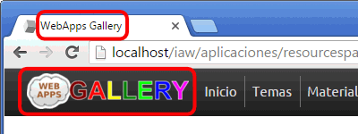
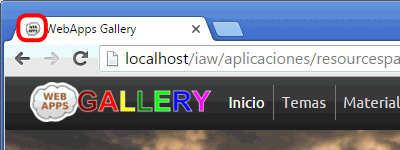
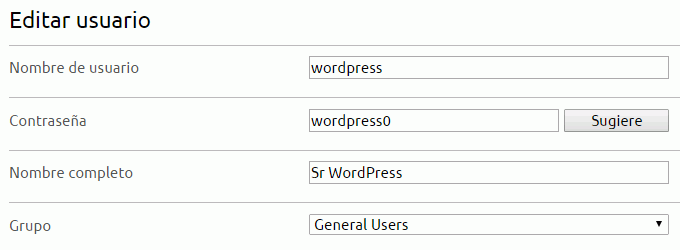
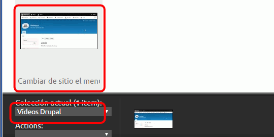
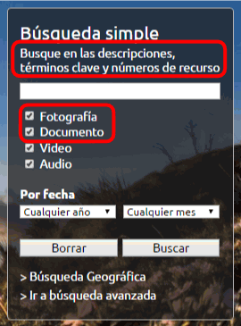

La versión de ResourceSpace utilizada en este examen es incompatible con PHP 7. Versiones posteriores de ResourceSpace son compatibles con PHP 7 pero el interfaz de la aplicación ha cambiado y algunos ejericcios del examen ya no tienen sentido.
En este examen hay que acabar entregando una carpeta con el nombre del alumno y que contenga:
las capturas de pantalla (que se llamen nombre_alumno_XXY.png donde X sea el número de ejercicio e Y el número de captura del ejercicio).
el fichero favicon.txt del ejercicio 2.
copias de las hojas de estilo modificadas en el ejercicio 8.
el fichero alias.txt del ejercicio 9.
la copia de seguridad de los datos de la aplicación del ejercicio 10.
la carpeta de la aplicación (comprimida en un zip).
Las capturas deben ser capturas de toda la pantalla.
Se recomienda hacer estos ejercicios con Google Chrome, ya que Firefox parece tener problemas con el guardado automático de la aplicación.
1. Instalar
ResourceSpace es una aplicación web para guardar y compartir medios digitales.
Descomprima ResourceSpace (llame a la carpeta /resourcespace).
Entre en phpMyAdmin como usuario root y cree un usuario de MySQL con nombre iaw_rs_1, contraseña iaw_rs_1 y base de datos iaw_rs_1.
Abra en el navegador /resourcespace e inicie la instalación.
Resuelva las advertencias iniciales y haga una captura de toda la pantalla en la que se vea que se han resuelto las advertencias iniciales:

Instale ResourceSpace creando el usuario administrador admin y contraseña admin00. Indique el camino a los ejecutables de ImageMagick y FFmpeg. Haga una captura de toda la pantalla una vez instalado:

2. Nombre, logo y favicon del sitio
Cambie el nombre del sitio (WebApps Gallery) y el logotipo usando el interfaz de la aplicación.
Haga una captura de toda la pantalla en la que se modifiquen estos valores y del resultado:

Cambie el favicon del sitio .
Escriba un fichero favicon.txt explicando cómo lo ha hecho.
Haga una captura de toda la pantalla:

3. Crear dos usuarios más
Cree un nuevo usuario del tipo General Users:
usuario wordpress con contraseña wordpress0
Haga una captura de toda la pantalla de registro del usuario:

Haga que las contraseñas de los usuarios puedan tener 6 caracteres y no contener números.
Haga una captura de toda la pantalla en la que se modifiquen estos requisitos
Cree un nuevo usuario del tipo General Users:
usuario drupal con contraseña drupal
Haga una captura de toda la pantalla de registro del usuario:
Haga una captura de toda la pantalla mostrando la colección y el vídeo:

Haga una captura de toda la pantalla como usuario admin, mostrando cómo revisa y/o aprueba los materiales pendientes.
5. Traducción al español
Complete la traducción del cuadro de búsqueda.
Search using descriptions, keywords and resource numbers ==> Busque en las descripciones, términos clave y números de recurso
Photo ==> Fotografía
Document ==> Documento
Las traducciones se hacen en dos sitios distintos, pero en ambos casos en el navegador (sin necesidad de editar ficheros).
Haga dos capturas de toda la pantalla de las páginas en que modifica la traducción.
Haga una captura de toda la pantalla mostrando el cuadro de búsqueda completamente traducido:

Cambie la traducción del mensaje de bienvenida:
Bienvenida/o a Imágenes y Palabras, una herramienta que te permitirá buscar fotografías, vídeos y testimonios entre sus más de xxx materiales. ==> Bienvenido a WebApps Gallery
Haga una captura de toda la pantalla de la página en que modifica la traducción.
Haga una captura de toda la pantalla mostrando el mensaje de bienvenida:
{kind=link}
{kind=link}
{kind=link}
{kind=link}